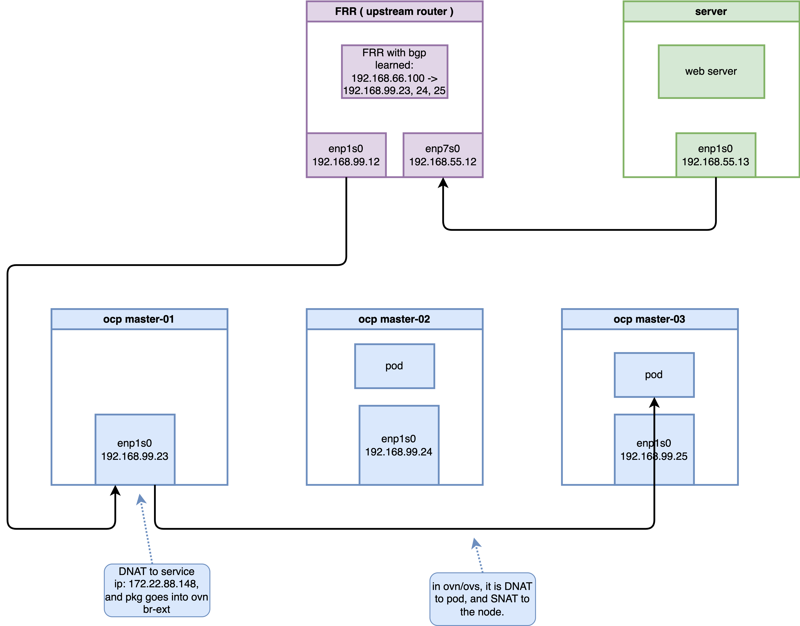
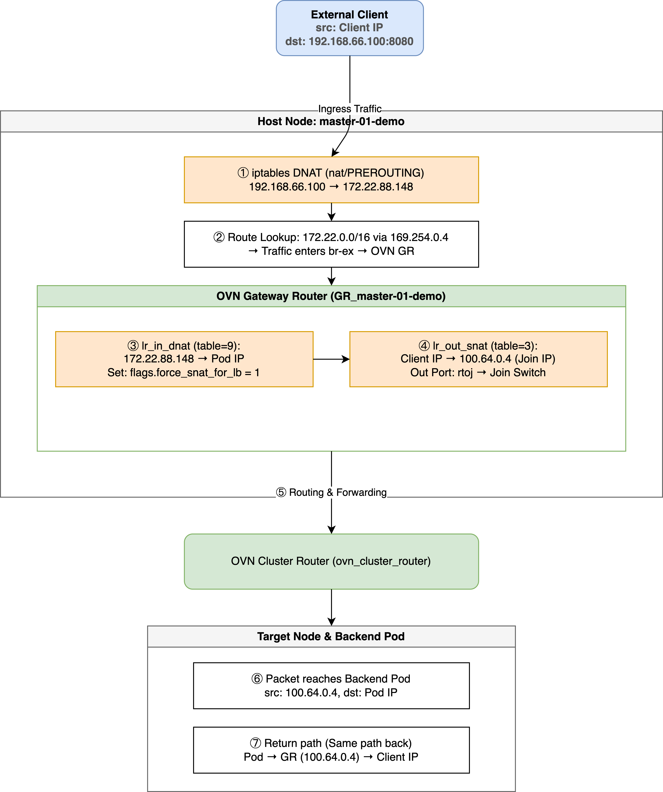
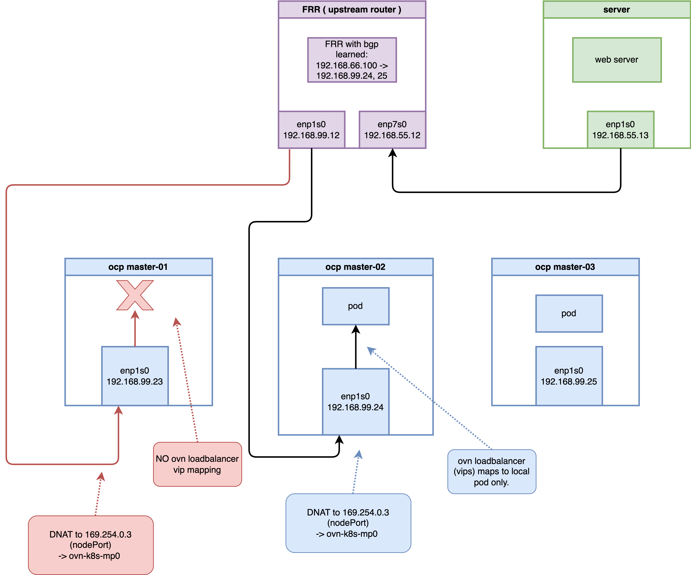

Technical Deep Dive: MetalLB BGP Ingress Traffic Flow in OpenShift 4.19
1. Overview
In OpenShift 4.19, using MetalLB with the FRR-K8s driver enables high-performance, high-availability BGP-based service publication (Ingress). Unlike Egress IPs, which focus on the outbound path, Ingress traffic deals with how to bring external traffic into the cluster via dynamic route advertisements and distribute it evenly across backend Pods.
This document reveals the complete processing chain through
empirical analysis, from BGP route
advertisement, to host-level Iptables
interception, and finally to OVN/OVS logical
flow forwarding, covering both Cluster and
Local traffic policies.
2. Validation Topology
This validation is based on a 3-node compact OpenShift cluster.
| Resource Type | Identifier/Address | Role/Description |
|---|---|---|
| Node IPs | 192.168.99.23,
24, 25 |
Mixed Master & Worker roles |
| LoadBalancer VIP | 192.168.66.100 |
External access IP advertised by MetalLB |
| ClusterIP | 172.22.88.148 |
Internal K8s Service IP |
| Backend Pod 1 | 10.132.0.39 |
Running on
master-02-demo |
| Backend Pod 2 | 10.133.0.4 |
Running on
master-03-demo |
| Upstream Router | 192.168.99.12 |
Simulated core DC router (Running FRR) |
3. Infrastructure Configuration

3.1 Test Workload Preparation
First, deploy a simple Python HTTP service as a backend,
fixed to specific nodes via nodeAffinity for
tracking purposes.
# 1. Deploy test Deployment
cat <<EOF | oc apply -f -
apiVersion: apps/v1
kind: Deployment
metadata:
name: edge-request-deployment
namespace: demo-egress
spec:
replicas: 2
selector:
matchLabels:
app: requester
template:
metadata:
labels:
app: requester
spec:
affinity:
nodeAffinity:
requiredDuringSchedulingIgnoredDuringExecution:
nodeSelectorTerms:
- matchExpressions:
- key: kubernetes.io/hostname
operator: In
values:
- master-02-demo
- master-03-demo
containers:
- name: toolkit
image: quay.io/wangzheng422/qimgs:centos9-test-2025.12.18.v01
command: ["bash", "-c", "python3 -m http.server 8080"]
EOF
# 2. Create LoadBalancer Service
cat <<EOF | oc apply -f -
apiVersion: v1
kind: Service
metadata:
name: egress-identity
namespace: demo-egress
annotations:
metallb.universe.tf/address-pool: egress-pool
spec:
type: LoadBalancer
selector:
app: requester
ports:
- name: http
protocol: TCP
port: 8080
targetPort: 8080
EOF3.2 MetalLB BGP Configuration
In OCP 4.19, MetalLB uses the BGP protocol to communicate with upstream devices.
# BGPPeer: Defines neighbor relationships
apiVersion: metallb.io/v1beta2
kind: BGPPeer
metadata:
name: peer-sample1
namespace: metallb-system
spec:
peerAddress: 192.168.99.12
peerASN: 64512
myASN: 64512
peerPort: 179
---
# IPAddressPool: Defines the address pool
apiVersion: metallb.io/v1beta1
kind: IPAddressPool
metadata:
name: egress-pool
namespace: metallb-system
spec:
addresses:
- 192.168.66.100-192.168.66.100
---
# BGPAdvertisement: Advertisement strategy
apiVersion: metallb.io/v1beta1
kind: BGPAdvertisement
metadata:
name: egress-identity-bgp-adv
namespace: metallb-system
spec:
ipAddressPools:
- egress-pool
nodeSelectors:
- matchLabels:
node-role.kubernetes.io/master: ""4. Routing & BGP Verification
4.1 Confirm FRRConfiguration Generation
MetalLB translates configurations into
FRRConfiguration objects, which are consumed by the
underlying frr-k8s daemon.
oc get FRRConfiguration -n openshift-frr-k8sOutput:
NAME AGE
metallb-master-01-demo 4h19m
metallb-master-02-demo 4h19m
metallb-master-03-demo 4h19mVerify the advertised prefixes:
oc get FRRConfiguration metallb-master-01-demo -n openshift-frr-k8s -o yamlKey Fragment:
spec:
bgp:
routers:
- asn: 64512
neighbors:
- address: 192.168.99.12
toAdvertise:
allowed:
mode: filtered
prefixes:
- 192.168.66.100/324.2 Upstream Router Perspective
On the upstream router (192.168.99.12), you can
see Equal-Cost Multi-Path (ECMP) routes to the VIP.
vtysh -c 'show ip bgp'Output:
BGP table version is 5, local router ID is 192.168.99.12, vrf id 0
Default local pref 100, local AS 64512
Status codes: s suppressed, d damped, h history, * valid, > best, = multipath,
i internal, r RIB-failure, S Stale, R Removed
Nexthop codes: @NNN nexthop's vrf id, < announce-nh-self
Origin codes: i - IGP, e - EGP, ? - incomplete
RPKI validation codes: V valid, I invalid, N Not found
Network Next Hop Metric LocPrf Weight Path
*> 192.168.55.0/24 0.0.0.0 0 32768 i
*=i192.168.66.100/32
192.168.99.25 0 100 0 i
*=i 192.168.99.24 0 100 0 i
*>i 192.168.99.23 0 100 0 i5. Traffic Deep Dive: Cluster Policy
By default, externalTrafficPolicy is set to
Cluster. Traffic can enter any node and be routed
across nodes to backend Pods.
5.1 Pipeline Visualization

5.2 Core Stages Evidence
1. Host-level Iptables Interception
At the host level, OVN-Kube pre-installs rules to map the VIP to the ClusterIP.
oc debug node/master-01-demo -- chroot /host bash -c 'iptables -t nat -S | grep 192.168.66.100'Output:
-A OVN-KUBE-EXTERNALIP -d 192.168.66.100/32 -p tcp -m tcp --dport 8080 -j DNAT --to-destination 172.22.88.148:80802. OVN Gateway Router (GR) SNAT —— Inbound Source Address Masquerading
After DNAT, traffic enters GR_master-01-demo
via br-ex. The GR is responsible for performing a
second DNAT on the ClusterIP and performing SNAT on the source
IP (masquerading it as the Join IP).
2.1 DNAT + force_snat Mark in GR Logical Flows
In the GR’s lr_in_dnat (table=9) flow table, the
load balancing rule for VIP 192.168.66.100 is as
follows:
oc exec -n openshift-ovn-kubernetes $OVN_POD -c ovn-controller -- ovn-sbctl lflow-list GR_master-01-demo | grep -i snat | grep "192.168.66.100"
# Output:
# table=9 (lr_in_dnat ), priority=120 , match=(ct.new && !ct.rel && ip4 && ip4.dst == 192.168.66.100 && tcp && tcp.dst == 8080), action=(flags.force_snat_for_lb = 1; ct_lb_mark(backends=10.132.0.39:8080,10.133.0.4:8080; force_snat);)Key Action Analysis:
flags.force_snat_for_lb = 1: Sets the “Force SNAT” flag.ct_lb_mark(...; force_snat): Performs load balancing, translates the destination IP, and marksforce_snatin CT Mark.
2.2 SNAT Execution in GR Logical Flows (lr_out_snat)
This is where SNAT actually happens! In the
GR’s outbound SNAT pipeline lr_out_snat
(table=3):
oc exec -n openshift-ovn-kubernetes $OVN_POD -c ovn-controller -- ovn-sbctl lflow-list GR_master-01-demo | grep "lr_out_snat" | grep "force_snat_for_lb"
# Output:
# table=3 (lr_out_snat ), priority=110 , match=(flags.force_snat_for_lb == 1 && flags.network_id == 0 && ip4 && outport == "rtoe-GR_master-01-demo"), action=(ct_snat(192.168.99.23);)
# table=3 (lr_out_snat ), priority=110 , match=(flags.force_snat_for_lb == 1 && flags.network_id == 0 && ip4 && outport == "rtoj-GR_master-01-demo"), action=(ct_snat(100.64.0.4);)
# table=3 (lr_out_snat ), priority=105 , match=(flags.force_snat_for_lb == 1 && ip4 && outport == "rtoe-GR_master-01-demo"), action=(ct_snat(192.168.99.23);)
# table=3 (lr_out_snat ), priority=105 , match=(flags.force_snat_for_lb == 1 && ip4 && outport == "rtoj-GR_master-01-demo"), action=(ct_snat(100.64.0.4);)3. OVN Logical Flow (ls_in_lb)
The ls_in_lb table handles the request once it
enters OVN.
# Find the corresponding logical flow on master-01
OVN_NODE_01_POD=$(oc get po -n openshift-ovn-kubernetes -l app=ovnkube-node -o wide | grep "master-01-demo" | awk '{print $1}')
oc exec -n openshift-ovn-kubernetes $OVN_NODE_01_POD -c sbdb -- ovn-sbctl --uuid lflow-list | grep -B 1 "172.22.88.148"Evidence:
uuid=0x93f7000bc19e7616196191...
table=13(ls_in_lb), priority=120, match=(ct.new && ip4.dst == 172.22.88.148 && tcp.dst == 8080), action=(reg4 = 172.22.88.148; reg2[0..15] = 8080; ct_lb_mark(backends=10.132.0.39:8080,10.133.0.4:8080);)4. OVS Flow Translation (The “Cookie” Secret)
The ovn-controller writes the first 8 digits of
the UUID (0x93f7000b) into the OVS flow table’s
cookie field.
oc exec -n openshift-ovn-kubernetes $OVN_NODE_01_POD -c ovn-controller -- ovs-ofctl dump-flows br-int | grep "cookie=0x93f7000b"Output:
cookie=0x93f7000b, table=21, n_packets=12, n_bytes=840, priority=120,ct_state=+new+trk,tcp,metadata=0x2,nw_dst=172.22.88.148,tp_dst=8080 actions=load:0xac165894->NXM_NX_XXREG1[96..127],load:0x1f90->NXM_NX_XXREG0[32..47],group:133Check group:133 to confirm backend
distribution:
oc exec -n openshift-ovn-kubernetes $OVN_NODE_01_POD -c ovn-controller -- ovs-ofctl dump-groups br-int | grep "group_id=133"group_id=133,type=select,selection_method=dp_hash,bucket=bucket_id:0,weight:100,actions=ct(commit,table=22,zone=NXM_NX_REG13[0..15],nat(dst=10.132.0.39:8080),exec(load:0x1->NXM_NX_CT_MARK[1])),bucket=bucket_id:1,weight:100,actions=ct(commit,table=22,zone=NXM_NX_REG13[0..15],nat(dst=10.133.0.4:8080),exec(load:0x1->NXM_NX_CT_MARK[1]))6. Advanced Scenario: Local Policy and Internal Masquerade IP
When a Service is configured with
externalTrafficPolicy: Local, behavior changes
significantly:
- BGP Advertisement: Only nodes running backend Pods advertise the VIP route.
- Traffic Redirection: Traffic must be directed to local Pods once it enters a node.

6.1 BGP Routing Perspective: Reduction of ECMP Routes
When externalTrafficPolicy is set to
Local, on the upstream FRR router, you can observe
that the routing entries have changed from 3 ECMP routes to only
2 (corresponding only to master-02 and
master-03 which run the backend Pods):
vtysh -c 'show ip route'
# Codes: K - kernel route, C - connected, S - static, R - RIP,
# O - OSPF, I - IS-IS, B - BGP, E - EIGRP, N - NHRP,
# T - Table, v - VNC, V - VNC-Direct, F - PBR,
# f - OpenFabric,
# > - selected route, * - FIB route, q - queued, r - rejected, b - backup
# t - trapped, o - offload failure
# K>* 0.0.0.0/0 [0/100] via 192.168.99.1, enp1s0, 00:45:03
# C>* 192.168.55.0/24 is directly connected, enp7s0, 00:45:03
# K * 192.168.55.0/24 [0/101] is directly connected, enp7s0, 00:45:03
# B>* 192.168.66.100/32 [200/0] via 192.168.99.24, enp1s0, weight 1, 00:00:08
# * via 192.168.99.25, enp1s0, weight 1, 00:00:08
# C>* 192.168.99.0/24 [0/100] is directly connected, enp1s0, 00:45:036.2 The Mystery of 169.254.0.3
In Local mode, host Iptables DNATs to a special
reserved address: 169.254.0.3.
# Check on master-02 (the node running Pods)
oc debug node/master-02-demo -- chroot /host bash -c 'iptables -t nat -S | grep 192.168.66.100'Core Output:
-A OVN-KUBE-ETP -d 192.168.66.100/32 -p tcp -m tcp --dport 8080 -j DNAT --to-destination 169.254.0.3:32736Why 169.254.0.3?
This is the OVN-Kubernetes Internal Masquerade IP. It acts as a “signpost” for OVN: “Use the load balancer containing only local endpoints.”
Routing Support
oc debug node/master-02-demo -- chroot /host bash -c 'ip route show | grep 169.254.0.3'169.254.0.3 via 10.132.0.1 dev ovn-k8s-mp06.2 Differentiated LB in OVN
LB View for Node master-01 (No Pod):
OVN_NODE_01_POD=$(oc get po -n openshift-ovn-kubernetes -l app=ovnkube-node -o wide | grep "master-01-demo" | awk '{print $1}')
oc exec -it -n openshift-ovn-kubernetes $OVN_NODE_01_POD -- ovn-nbctl find load_balancer name="Service_demo-egress/egress-identity_TCP_node_switch_master-01-demo"VVIP Content:
vips: {
"192.168.66.100:8080" : "10.132.0.39:8080,10.133.0.4:8080",
"192.168.77.23:32736" : "10.132.0.39:8080,10.133.0.4:8080",
"192.168.99.21:32736" : "10.132.0.39:8080,10.133.0.4:8080"
}Note: master-01’s VIPS list does not contain 169.254.0.3:32736, as there are no local endpoints.
LB View for Node master-02 (With Pod):
OVN_NODE_02_POD=$(oc get po -n openshift-ovn-kubernetes -l app=ovnkube-node -o wide | grep "master-02-demo" | awk '{print $1}')
oc exec -it -n openshift-ovn-kubernetes $OVN_NODE_02_POD -- ovn-nbctl find load_balancer name="Service_demo-egress/egress-identity_TCP_node_switch_master-02-demo"vips: {
"169.254.0.3:32736" : "10.132.0.39:8080",
"192.168.66.100:8080" : "10.132.0.39:8080,10.133.0.4:8080"
}Entering traffic matches 169.254.0.3, enforcing local distribution.
6.3 Negative Validation: Bypassing Advertised Nodes
Force traffic to master-01 (no local Pods) via
static route:
# Add static route on router
vtysh -c 'conf t' -c 'ip route 192.168.66.100/32 192.168.99.23'
# Verify route
vtysh -c 'show ip route 192.168.66.100/32'Output:
Routing entry for 192.168.66.100/32
Known via "static", distance 1, metric 0, best
Last update 00:00:03 ago
* 192.168.99.23, via enp1s0, weight 1
...# Test access
curl -vvv http://192.168.66.100:8080Result: Connection refused
Analysis: master-01 has no local backend
mapping for the masquerade IP request, ensuring the integrity of
the Local policy.
7. Conclusion
OpenShift 4.19’s MetalLB + OVN solution demonstrates complex but efficient collaboration:
- Layered DNAT: Iptables handles VIP “claiming,” while OVN manages logic and tracking.
- Traceability: UUID-to-Cookie mapping bridges logical and physical troubleshooting.
- Local Isolation: The
169.254.0.3masquerade address enables node-level traffic governance.